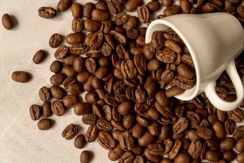

Coffea canephora - Robusta
É o tipo predominante no país, cultivado principalmente nas regiões do Uíge, Cuanza Norte, Cuanza Sul, Bengo e Cabinda

Café Arábica (Coffea arabica)
Cultivado em menor escala, representa apenas cerca de 5% da produção nacional. É encontrado em altitudes mais elevadas nas províncias de Benguela, Bié, Huambo, Huíla, Moxico e também no Cuanza Sul.